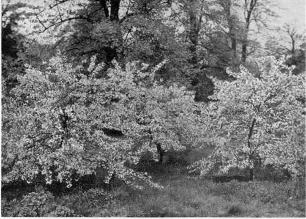
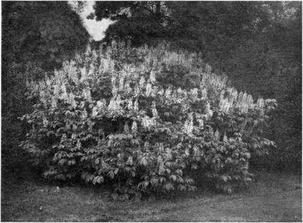
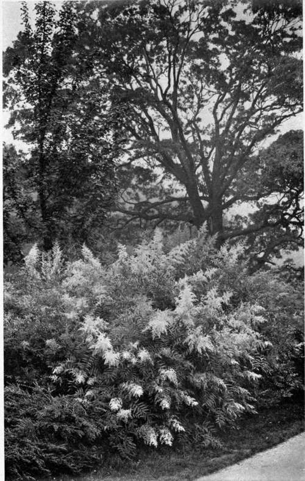

Chapter XVII. What America Can Teach England About Shrubs
Description
This section is from the book "What England Can Teach Us About Gardening", by Wilhelm Miller. Also available from Amazon: What England Can Teach Us About Gardening.
Chapter XVII. What America Can Teach England About Shrubs
The only important material except water-lilies in which we have a striking climatic advantage over England — Why we have ignored our opportunity and have even started on a false scent.
THE only material in which America has a striking climatic advantage over England is shrubbery. When my colleague, Mr. Leonard Barron, came to America, the one horticultural feature that struck him as new and strange was the burst of spring, especially the dramatic fortnight when the fruit trees are in bloom. For in England spring comes so early and gradually that March is a month of considerable floral charm, with its thousands of daffodils and Lenten lilies, its exquisite blue carpets of Grecian wind flowers, and its lambent sheets of gold wrought by the winter aconite. But in America March is a rough and flower-less month in the North, and spring comes with a rush when the orchards bloom. England's fruit trees are mostly hidden from view behind high brick walls in private gardens. And while Americans know comparatively little about amateur fruit growing for quality, we lead the world in commercial orcharding; consequently our whole landscape is a mass of shimmering white at the poetic moment of the year, just before the trees leaf out. Now, the largest group of flowering shrubs belongs to the same family as the fruit trees, and 90 per cent, of all our shrubs join the mighty chorus that celebrates the death of our atrocious winter. (See Japanese crab, plate 70.)
Another dramatic moment comes in October, when the American landscape has more vivid foliage than the English. True, the biggest masses of colour are supplied by the trees, but the shrubs give the finishing touch to a perfect picture. England can never enjoy such an autumn show because her cool and moist summers prolong growth, while our hot and dry ones promote maturity. England can never produce so thrilling a spring flower show, because her autumn is cool and moist and therefore the shrubs cannot properly ripen their wood and make good buds.
The neglect of shrubs in English gardens will be apparent if you examine any of the sumptuously illustrated books on English gardening. The greatest collection of large photographs on this subject is called "The Gardens of England," yet I have just turned over the two hundred and seventy-two plates thus far published without finding a single picture in which flowering shrubs play an important part! In American gardens shrubs have always been a common feature, and the most precious old gardens we possess generally contain a few grand old bushes of such height and magnificence as one never sees in the ordinary mixed shrubbery.
But we need not "throw out our chest like a Russian sleigh" because of this one advantage. For it will be at least three hundred years, in my opinion, before America becomes one great garden, as England is. And our advantage in deciduous shrubs is more than counterbalanced by her advantage in evergreen shrubs, especially hybrid rhododendrons. For these gorgeous plants not only have their showy bloom, but their magnificent foliage is full of inspiration all winter, while deciduous shrubs, broadly speaking, look naked and shivery in our climate. The English winter is naturally mild, but the ubiquitous English laurel (which we cannot grow) makes it cheerful and beautiful, while ours is bleak and ugly. I cannot understand why horticultural writers nearly always jumble these two elements in the same article on "shrubs." For good landscape gardeners rarely put both in the same shrubbery border. And we can have no clear thinking or good design unless we make a sharp distinction between precious and worthless material for winter since, in the North, this comprises five eighths of the year, or from the middle of October to the middle of April. Therefore, the present article deals only with the deciduous bushes.
JAPANESE CRAB (Pyrus floribunda), EXAMPLE OF THE MANY APRIL-FLOWERING SHRUBS WHICH BELONG TO THE FRUIT TREE FAMILY AND MAKE OUR " BURST OF SPRING". See page 196.
DWARF HORSE CHESTNUT (Aesculus parviflora). EXAMPLE OF THE MANY SLOW-GROWING BUSHES THAT ARE CROWDED TO DEATH IN THE ORDINARY MIXED BORDER BY THE QUICK GROWING KINDS. See page 203.
AN ASH-LEAVEL SORBARIA FROM AFGHANISTAN (Sorbaria Aitchisoni) WHICH OUGHT TO RUN OUT OF OUR GARDENS THE MISERABLE SUMMER-BLOOMING SPIREAS THAT HAVE STIFF CONES OF PURPLISH FLOWERS.
And now comes the third great advantage of our shrubbery, for we can excel England on red berries that last all winter and on shrubs with brightly coloured bark. (See lower picture on plate 73.) And just as the Canadians have made their long, steady winter an attractive season for tourists by their picturesque sports, so the fickle winter of the northern United States can be made to draw people from all parts of the world to experience the unique charm of highly coloured berries and branches.
Now, then, the threefold superiority of our shrubs is apparent — the burst of flowers in spring, the vivid foliage in autumn, the brilliant berries and branches in winter. But have we developed our shrubberies along these natural lines? Not at all. On the contrary we have blindly and slavishly followed European precedents. We import all their man-made freaks and dot our lawns with them, so that they look like Joseph's coat turned inside out or the side-shows of a circus. For, every great personality among the shrubs that we ought to know and love for its own sake has its cut-leaved, weeping or purple-foliage variety, and as to such gaudy stuff we are simply mad. It is worse than a crime to plant one's place chiefly with such truck; it is a blunder. The reasons for this judgment are explained in the chapter on trees.
Continue to:
Tags
garden, flowers, plants, England, effects, foliage, gardening